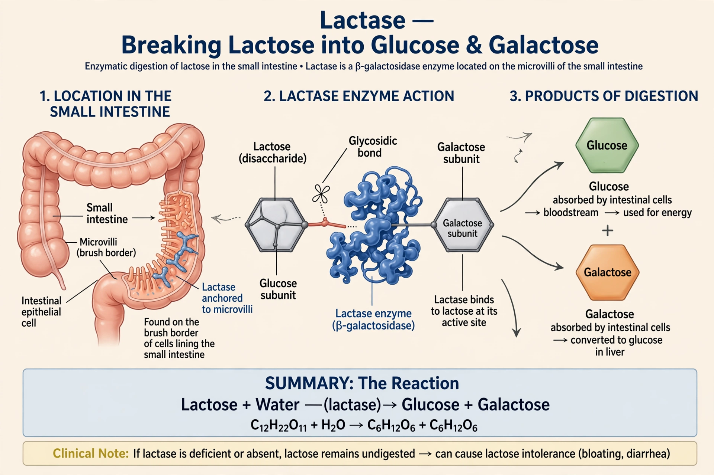

Lactase is an enzyme produced in the small intestine that breaks down the disaccharide lactose into its component sugars, glucose and galactose, which can then be absorbed. Its full name is lactase-phlorizin hydrolase, and it is encoded by the LCT gene on chromosome 2.

LactaseLactase sits in the brush border of enterocytes lining the small intestine. Activity is high in infants and, in most humans, declines after weaning; regulatory variants near LCT cause lactase persistence in many European, African pastoralist and Middle Eastern populations. Deficiency leads to lactose intolerance and contributes to malabsorption symptoms.
Commercial lactase, often from yeasts or fungi such as Kluyveromyces, is used to make lactose-free milk and as oral supplements taken with dairy foods. Industrial hydrolysis also reduces crystallisation in ice cream and concentrated milk products.